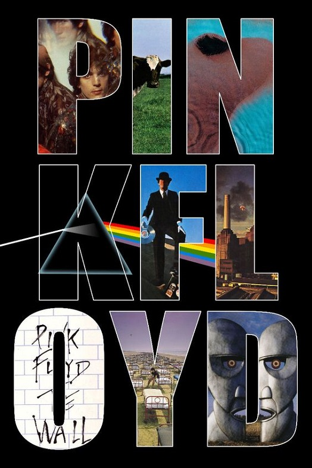
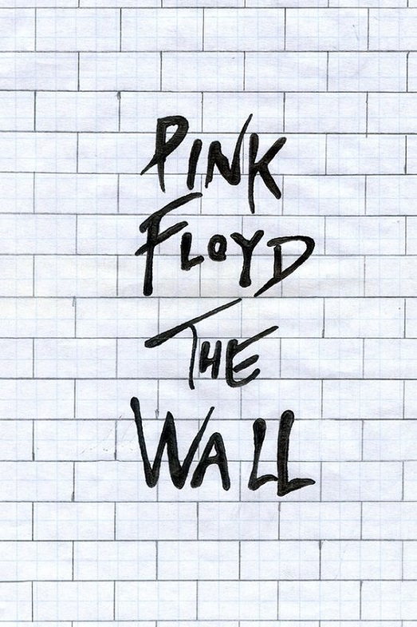
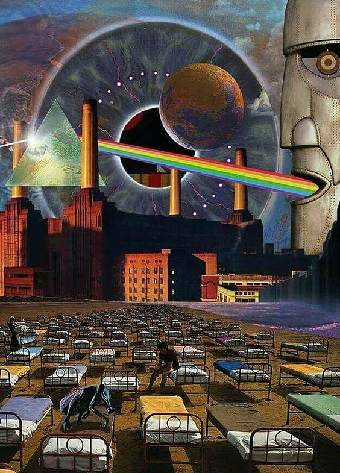

Pink Floyd fue una banda de rock británica, considerada un icono cultural del siglo xx y una de las bandas más influyentes en la historia de la música, que obtuvo gran popularidad gracias a su música psicodélica que evolucionó hacia el rock progresivo y rock sinfónico con el paso del tiempo. Es conocida por sus canciones de alto contenido filosófico, la experimentación sónica, las innovadoras portadas de sus discos y sus elaborados espectáculos en vivo. Sus ventas sobrepasan los 300 millones de álbumes vendidos en todo el mundo,45 97,5 millones de ellos solamente en los Estados Unidos.6 Inicialmente el grupo estaba formado por el batería Nick Mason, el teclista y vocalista Richard Wright, el bajista y vocalista Roger Waters y el guitarrista y vocalista principal Syd Barrett, quien se convirtió en el primer líder de la banda. Bob Klose fue guitarrista inicialmente por un corto tiempo, pero no llegó a aparecer en ningún disco. El extraño comportamiento de Barrett, causado por el excesivo consumo de drogas, especialmente LSD,1 hizo que su amigo David Gilmour se integrara al grupo en diciembre de 1967 y que quedase definida la formación clásica del grupo tras la marcha de Barrett en abril de 1968. Pink Floyd comenzó con un gran éxito en la escena underground londinense a finales de los años sesenta, con Syd Barrett como principal compositor. La salida de Barrett convirtió a Waters en el principal escritor de la banda mientras que Gilmour y Wright tomaron el protagonismo en la composición musical. El grupo grabó durante esta época muchos álbumes que se convirtieron en enormes éxitos comerciales, como The Dark Side of the Moon (1973), Wish You Were Here (1975), Animals (1977) y The Wall (1979). Después de las sesiones de grabación de The Wall el bajista Roger Waters expulsó de la banda al tecladista Rick Wright debido a que estaba disconforme con sus aportes al álbum. En 1983 el grupo lanzó el disco The Final Cut el cual tuvo un modesto éxito comparado con sus obras anteriores y la banda ni siquiera salió de gira. En 1985, Waters declaró la extinción de Pink Floyd señalando que la banda estaba agotada creativamente. Los demás miembros, Gilmour y Mason, se negaron a aceptar esta decisión y continuaron con el grupo por lo cual Waters los demandó reclamando parte de los derechos de la marca Pink Floyd. Waters perdió en tribunales pero llegó a un acuerdo con Gilmour y Mason obteniendo los derechos exclusivos sobre toda la imaginería que desplegaban en sus conciertos (incluido su famoso cerdo volador) y los derechos sobre el espectáculo audiovisual de The Wall (excluyendo los tres temas que compuso Gilmour para la obra: «Young Lust», «Run Like Hell» y «Comfortably Numb») y sobre todos los temas incluidos en The Final Cut, mientras que el resto del grupo podía seguir usando el nombre de Pink Floyd sin problemas. Tras superar estos problemas legales, Gilmour y Mason volvieron a llamar a Wright para grabar el disco A Momentary Lapse of Reason (1987) logrando gran éxito mundial, sin embargo, Wright participó solo como tecladista asalariado y no como miembro oficial de la banda. Esto fue solucionado en el siguiente álbum The Division Bell (1994) en donde Wright se reintegra nuevamente como miembro oficial del grupo. Este es el disco de estudio de la banda en el que ya aparecen Gilmour, Mason y Wright como componentes de Pink Floyd. Waters, por su parte, se embarcó en una carrera como solista y no se volvió a reunir con Pink Floyd hasta 24 años después, el 2 de julio de 2005, en el concierto Live 8 en Londres donde tocaron las canciones «Speak to Me/Breathe», «Money», «Wish You Were Here» y «Comfortably Numb». En noviembre de 2014 salió a la venta The Endless River, el último disco de estudio de la banda, que contiene en gran medida material grabado durante las sesiones de grabación de The Division Bell entre 1993 y 1994 sin contar con ningún aporte de Roger Waters.7 En la actualidad, Pink Floyd se ha convertido en un grupo musical de culto que suma millones de fieles adeptos a su música alrededor del mundo.
|  |  |  |